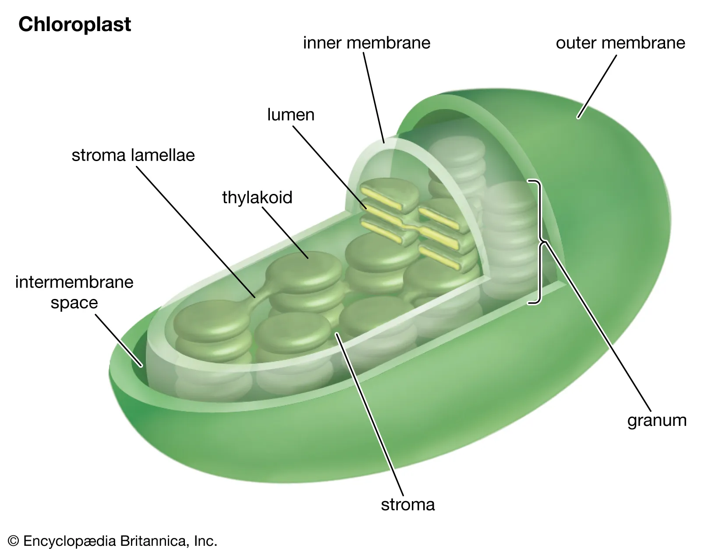

Plant Metabolism
Photosynthesis
Plant has different pigments that absorbs visible light as energy.
Most Plants are autotrophs (produce their own organic matter by photosynthesis)
Undergoes Light Reaction and Calvin Cycle
Light Reaction
Captures Light Energy and makes ATP & NADPH
Calvin Cycle
Make organic compound using ATP and NADPH from O2
Structure of Plant
Cuticle (Wax): prevents the water loss
Epidermis Layer: allows light to pass through
Guard Cell: change shape to open and close Stoma to allow CO2 in and O2 out
Mesophyll Layer: performs Photosynthesis
Vescular Bundles: Vein that transports water and minerals from root to leaf, carrys saccharides from leaf to root.
Structure of Chloroplast
Location for Photosynthesis in plant cell
Contains:
Outer and Inner Membrane
Own DNA and ribosomes
Stroma_____________ (Protein rich fluid)
Thylakoids__________ (Cholorophyll molecules embeded in sac membrane)
Thylakoid Lumen___ (Fluid filled inside Thylakoids)
Grana_______________ (Stacks of Thylakoids, connected by stroma lamellae)

Back